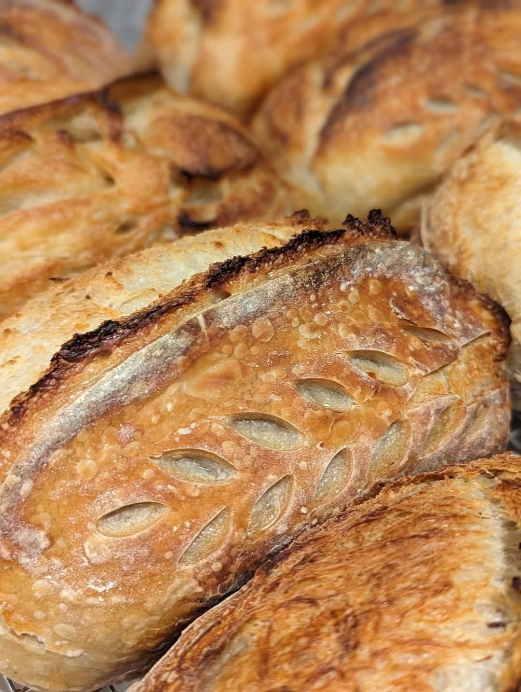

Sourdough You Know is a small-batch cottage bakery in Minooka, Illinois, built on real ingredients, real time, and a whole lot of community.

It began the way the best things do, with a jar of bubbling starter and a refusal to rush. Naturally leavened bread takes time, and that time is the whole point. The long ferment is what gives real sourdough its flavor, its crust, and its character.
What grew from that kitchen is a licensed and insured cottage bakery and a self-serve cart that has become a little gathering spot for the neighborhood.
No commercial yeast. Just flour, water, salt, time, and a well-loved starter.
Small batches, shaped by hand, baked fresh the day we are open.
A real, above-board cottage bakery you can feel good buying from.
The self-serve cart runs on trust, the way a good neighborhood should.
The cart carries goods from local small businesses, not just our bread.
Rooted in Minooka and out at markets across our community.
From the start, the goal was never just to sell loaves. The self-serve cart is stocked with local honey, jams, farm-fresh eggs, handmade soaps, wax melts, body care, and desserts from makers around the area. When you shop the cart, you are supporting a whole web of small businesses at once.
See where to find usOrder ahead on Hotplate, or find the self-serve cart Friday through Sunday and at the farmers market.